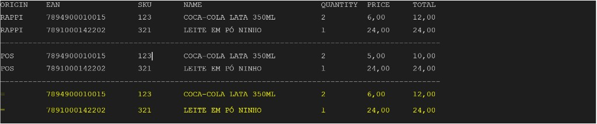
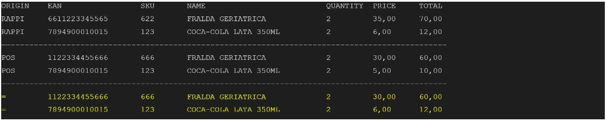
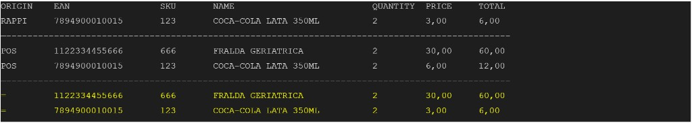
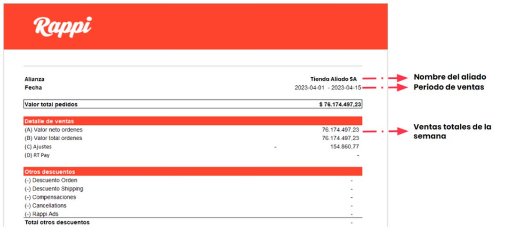

Documentação técnica do fluxo Payless para POS e integradores. O conteúdo segue o manual oficial em
inglês para manter alinhamento com contratos e mensagens de API.
Rappi Payless Integration Guide
Como navegar
Leia a política, o que é Payless e as considerações técnicas.
Revise o fluxo, o PDF e o checklist de integração.
Siga a jornada do pedido (passos 1–9) e as regras do código de barras.
Implemente sandbox, JWT, order details e authorize.
Se aplicável, implemente Price Match; consulte tabelas de erros, cancel, refund e conciliação.
Policy and restrictions
Important: To ensure an excellent experience for both end users and RT/Shoppers, it is
not allowed for partners to implement any internal validation that prevents the authorization request from
being sent or any development not mentioned in this documentation. If a case arises with this despite
this recommendation, no stores will be migrated to Payless unless the partner eliminates said validations
and extra developments from its code.
What is Rappi Payless?
Rappi Payless is a card/cash free payment method exclusive for our pickers (personal shoppers and couriers).
It enables point of sales systems (POSs) to process Rappi orders using payment codes generated from our
pickers' mobile apps. Those payment codes are presented in the form of barcodes or QR codes.
Rappi Payless eliminates card transaction fees. It also simplifies conciliation and reporting, reduces
checkout time, and eliminates operational issues related to releasing funds to debit cards.
Payless technical considerations
Payless operates under a public API with a root for each country in Latin America, although the same integration can be used in all countries.
It operates under HTTPS TLS 1.2+ and use of JWTokens. Through procedural rules, Payless can continue payment processes in case there are communication interruptions.
The approval code can be QR code, barcode and numeric. All three options are always available.
Daily queries of sales information can be made to cross with the reports generated in the POS through an API.
Visão geral do fluxo Payless V3 (pedido, picking e continuação no caixa).
Take some time to analyze and understand all the possible scenarios the POS system will have to implement
for a successful integration.
Integration checklist
Upon successfully implementing Rappi Payless, your solution is expected to achieve the following:
Ingest and process Rappi Payless payment codes either in the form of barcodes, QR-codes, or manually keyed-in.
Send payment authorization requests to Rappi including all required details.
Properly handle successful and declined transactions.
Handle request timeouts with automatic retries.
On any given situation where the payment cannot be performed through Payless (cellphone network, internet failures, etc.), allow to pay the order via card/cash.
Daily payment list of your transactions authorized by Rappi.
Introduction
This article provides an overview of Rappi Payless. Expect to learn more about:
Our picker's experience with Rappi Payless
The regular and fallback payment flows
How to retrieve information to feed your conciliation process
How to consume our sandbox methods to setup your test environment and run manual and automated tests on your integration.
Customer places a new order — operational steps
Customer places a new order. Depending on the store configuration, an algorithm decides
whether the order will be fulfilled by a personal shopper or a courier.
Picking of the products in the order. From the product list, the picker must mark each
product as "found", "not found", or "replaced". Pickers can't advance to
payment with pending products on the shopping list.
Payment method selection. At this point, the picker app is in payment mode, generating
new codes every 10 minutes.
(If Price Match flow will be implemented) POS retrieve the Rappi's basket and the customer information.
It's necessary to take the order details and then compare the prices of Rappi VS POS, and if necessary
overwrite those that are different. Additionally, it is useful when POS need user identification to
accumulate points for the customer. Payment code is scanned from the picker's device to retrieve order details.

Exemplo de comparação de linhas Rappi × POS (price match).

Caso com itens mistos: correspondência parcial e priorização de preço onde aplicável.
Cashier scans all products. The POS must record the user's document number for the
respective accumulation of points. In the meantime, the cashier must check out all the products as they
do on a regular basis.
(If Price Match flow will be implemented) POS overwrite the prices. The POS must
overwrite the prices of the scanned products if they are different compared to those obtained from the
Rappi order previously.

Sobrescrita de preço unitário conforme pedido Rappi.
Payment code is scanned from the picker's device. The cashier has the option to scan a
QR code, a barcode, or manually key-in the code. If the POS already scanned the barcode when retrieving
customer's identification before scanning the products, it's necessary to scan the code again because it
has a lifetime and it may have already changed.
POS sends the purchase details to Rappi. This is an HTTP request to our Payment
Authorization endpoint. If successful, the POS will receive a transaction authorization token in response.
Picker takes a snapshot of the receipt. The order is ready for delivery.
Shopper Pays with Payless (VIDEO): use the training video provided by your Rappi integration contact.
Produto pesável: quantidade do POS × preço unitário Rappi.
The Rappi Payless barcode
The Rappi Payless barcode (also referred to as payment code) is a random number associated with a unique
order identifier in our database. The line barcode is CODE-128.
Barcodes have a total time live (TTL) of 10 minutes; every 10 minutes the barcode is refreshed in our pickers' apps payment views.
AUTO RETRIES ON TIMEOUTS: The barcode's TTL is 10 minutes. It's important to consider this
information when implementing automatic retries in response to communication failures or timeouts between
your POS and Rappi's backend.
Barcode uses
Besides being used in the payment authorization request, the barcode can be used to retrieve the order details, cancelations and refunds.
Payless process — payment authorization
A successful transaction will always return an HTTP status code 200 and includes an
authorization token in the response body. Both the barcode and the authorization token (or authorization
code) for each successful transaction MUST be stored on the retailer's side for
reconciliation purposes.
Declined authorizations
Although there are few reasons that lead a transaction to be declined by Rappi, those aren't yet defined
by reason codes, and we don't expect the POS to expose this information. On each declined transaction, the
picker receives a push notification with instructions to adjust the order before retrying the payment.
Malformed payment authorization request
There might be missing required properties or inconsistent property types in your payment authorization.
The requested amount exceeds the authorized threshold
This scenario may be caused by unreported price differences pushing the requested amount past the order
authorization threshold or products requested by the customer via chat were not properly included in the
order by the picker. With each declined transaction, the pickers receive push notifications on their apps,
advising them about inconsistencies in the order and asking them to make the necessary adjustments before
retrying. Once adjusted, the order shouldn't be rejected a second time.
Unacceptable orders
Orders that receive the error message unacceptable_order may have been canceled by the
customer (and due to a momentary connectivity issue, the picker app wasn't synced), they may have already
been paid for, or the courier is trying to purchase the products at a different retail partner.
Invalid barcodes
Most of the time, invalid barcode scenarios are associated with fraud attempts. A screenshot of the barcode
screen is taken and the payment is declined; either because that barcode is expired or it has already been
applied to another payment.
Wrong store
When a courier attempts to pay for an order in a store that doesn't correspond to the store that was
originally ordered in the Rappi App, it will not be authorized until it goes to the correct store or is
released for another courier to go to the correct store.
Invalid products
When a courier attempts to pay for products different from the original order, it will not be authorized
until the courier gives the correct products of the order to the cashier.
Handling communication failures
Best practice on Rappi Payless implementations mandates having an automatic retry at the POS whenever a
communication failure occurs i.e., when the POS doesn't receive a response to its payment authorization
request.
Example: The cashier enters a command on the POS to send out a payment authorization
request to Rappi. We recommend that the requests timeout should be configured after 20 seconds,
and also you may safely have up to 5 automatic authorization attempts within the barcode TTL.
The timeout setting is configurable at the discretion of each retailer, taking into account the latency of
their private networks.
Best practices — double authorization risk
There is a possibility that at the moment of requesting the authorization, it arrives to Rappi's services,
but at the moment of replying that it was successfully authorized, this message doesn't arrive to the POS
of the partner, causing the RT App to show that the order was successfully paid, while the cashier will not
print the invoice. In this scenario, the partner must implement a cancellation to the
authorization using the right endpoint, because we need to avoid paying twice (debit/cash and Payless), as
the RT will end up paying using debit/cash.
Falling back to debit cards / cash
It should be a rare exception. The alternative flow allowing card payments is a must
have, but should be a rare exception. Our main KPI in Rappi Payless is having 99.9% of transactions processed
by our authorization engine. It means the fallback flow should only kick-in once in every 1000 orders processed.
The fallback system has been redesigned so that it works based on rules and retries; as soon as the payment
fails, after certain retries the RT/Shopper App will change to pay using card or cash. This process is
automatic and does not require the intervention of the partner within the payment process.
Note: The version of using pincode is deprecated.
Sandbox Servers & Authentication
Our sandbox operations were created to accelerate our partners' development and testing. This is a six-step
process. You will have one or more dummy store_id that can be used on the methods listed in our
sandbox documentation.
Servers
Each country where Rappi operates utilizes a distinct base URL:
Environment
Country / scope
Base URL
Development
All countries
https://microservices.dev.rappi.com
Production
ARG
https://services.rappi.com.ar
Production
BRA
https://services.rappi.com.br
Production
CHL
https://services.rappi.cl
Production
COL
https://services.rappi.com
Production
CRI
https://services.rappi.co.cr
Production
ECU
https://services.rappi.com.ec
Production
MEX
https://services.mxgrability.rappi.com
Production
PER
https://services.rappi.pe
Production
URY
https://services.rappi.com.uy
Authentication (DEV — PROD)
Rappi CPG APIs implement JWT-based authentication. You must exchange the credentials provided by Rappi for
a JWT access token to authenticate API requests. This token expires after 12 hours. Each
time your token expires you must request a new one from the sign-in endpoint.
All API requests MUST be made over HTTPS. Calls made over plain HTTP WILL FAIL.
API requests without a valid access token WILL FAIL.
Note: Your integration credentials carry many privileges, so be sure to keep them secure!
Do not share them in publicly-accessible areas such as GitHub, client-side code, chat apps, etc. If a
security breach is suspected, contact Rappi ASAP to retire compromised passwords (secrets) and generate new
credentials. Any suspected misuse of the API MAY result in the retailer's access to Rappi's
service being suspended pending investigation.
Considerations
The token will only be valid for 12 hours.
An order can change token during the process at Payless.
Keep in mind that the token that you create is only valid in your own environment.
POST /api/cpgops-integrations/retailers/sign-in
Generate your JWT access tokens. Returns an access token to authenticate your requests for the next 12 hours.
This endpoint should ONLY be developed for the sandbox environment.
Uploads a catalog of products to your Sandbox environment. Required to allow the creation of orders for
development, testing automation, and QA. The upload performs an upsert on SKU
(retail_id).
Product catalog in Excel format: use the template provided by Rappi. The
.xlsx must contain columns in this order: Name, Price, EAN, SKU, Description.
The file must be smaller than 2 MB, only one sheet. Uploaded data are
added (they do not replace all previous data and cannot be deleted). An ID in the response message is
your {resultId} for follow-up validation.
The response body includes multiple scenarios (e.g. valid, invalid_state,
invalid_storekeeper, different_retailer, invalid_high_price,
invalid_low_price) each with basket, order_id, and
shopper_id. Use the scenario your integration engineer indicates.
GET /api/cpgops-integrations/pos/orders/{order_id}/barcode
Sandbox only.
Returns the barcode generated for Payless tests. Code length is configurable between 6 and 13 digits per
partner. If using an online barcode generator, use CODE-128.
Keep in mind that there's a possibility in each order that all fields in the response body
can return as null. This endpoint can't be used after authorization.
Must be used before requesting payment authorization. Contains basket (SKU, price, units, etc.), order_id, store_id, and customer when required by POS.
Loyalty / simple discounts: Rappi provides customer.identification as the
validated user's loyalty id when non-null — load it into the POS so loyalty discounts apply correctly.
GET /api/cpgops-integrations/pos/v3/payments/{barcode}/order
Headers may include AUTH_USER / user as required by your integration contract.
Example response shape: order_id, currency, amount, store_id, customer, delivery_address, basket[] with unit prices and totals.
User invoice information (PROD only)
Invoice fields may be null — Rappi does not force users to input this data. If null or empty, invoice as
"final consumer" / "anonymous". Electronic invoice data may appear on
customer.electroninc_invoice_* fields (spelling per API).
Authorization Payments with Payless (DEV - PROD)
Request payment authorization using the barcode from the RT/Shopper. On success, a transaction code
confirms authorization. store_id must match Rappi inventory integration.
terminal_id and terminal_transaction_id are partner-unique identifiers.
Basket is mandatory: all products scanned at the register. Metadata is
free-form. Amount is the final total after discounts aligned with inventory integration.
What is basket?
sku must match Rappi inventory integration.
quantity: units count, or weight in KG for weighables.
unit_type: same as inventory — U (unit), WW (loose weighable), WB (packaged weighable).
taxes: description per line (e.g. IVA 19%) for financial conciliation.
Group identical lines; tax amounts must reflect grouped lines.
POST /api/cpgops-integrations/pos/v3/payments/{barcode}/authorize
Barcode missing, expired, or used for another order
406
Price difference vs Rappi order vs ally authorization amount
409
Duplicate transaction
410
Wrong store
412
Already authorized with another payment method
413
POS basket vs Rappi app products mismatch
500
Server error
I got an error, what should I do?
Code
Action
400
Contact Rappi Tech Team
401
Check token or generate a new one
403
RT must go to the correct partner
404
RT must show a new barcode
406
Verify amount/products with RT or rescan
409
terminal_id / terminal_transaction_id / store_id already used on another order
410
RT must go to the correct store
412
Order already paid another way — RT should proceed with delivery per instructions
413
Scanned products must match Rappi order list
500
Contact Rappi Tech Team
Successful responses return status such as payment_authorization_request_succeeded with transactions[] including authorization_code and payment_code.
[PRICE MATCH VERSION] Authorization Payments with Payless (DEV - PROD)
Develop this flow only if your Integration Engineer instructs you. If you were told to
implement the legacy flow, follow the separate legacy documentation link provided by Rappi.
Same authorize endpoint; additional rules apply for basket and pricing alignment with Rappi order details.
Price Match
The partner must retrieve prices from Rappi (order details), overwrite POS-scanned prices during payment,
and print the fiscal receipt using overwritten prices.
Considerations
Do not process Payless sales without this feature when Price Match is in scope.
Replacement is not always possible (e.g. approximate weighable packs) — store price may remain.
Items only on POS and not on the Rappi order: scan with store price and include in authorization basket.
Items only on Rappi and not scanned: do not process; do not include in authorization basket.
Price Match logic
If SKU (or EAN) does not match: use POS price and POS unit price.
If they do match — unit product: use Rappi's price and unit price.
If they match — weighable: use Rappi's price per kg; calculated line = Rappi price (kg) × quantity scanned at POS.
Note: Calculated price = Rappi price (kg) × quantity scanned at POS (see weighable figure in journey section).
Example cases (summary)
Case 1: Two products, both match, Rappi higher — take both prices from Rappi.
Case 2: One line doesn't match — only matching SKUs use Rappi price.
Case 3: One Rappi line, two POS lines, match where applicable — Rappi wins on matching EAN/SKU; others use POS.
Case 4: Different unit counts (chat/fraud risk) — use POS units and adjust total; authorization may block until picker adjusts.
Case 5: Weighable differences — final = Rappi kg price × POS weight.
Use the same POST .../authorize request shape as the standard flow.
Validation Payment Endpoint
When communication breaks and the POS is unsure if authorization succeeded, validate payment status for the order.
GET /api/cpgops-integrations/pos/v3/payments/orders/{order_id}/status
Must be used after requesting authorization (errors if used before).
Response includes payment status, basket snapshot, authorization code, store and terminal identifiers, etc.
Cancellation Transactions (DEV - PROD)
Important: After calling cancel, support paying again via Payless or another method. The
cancellation endpoint cancels the authorization, not the Rappi order.
Use when Rappi authorized Payless but the success response never reached the POS (risk of double payment
with dispersion/card). Do not print nor hand over products until status is clear. Recommended:
at least 5 retries after 20 seconds without response before deciding.
Store order_id and barcode on successful authorization. JSON body must match the authorization
request. Same-day only (until 23:59:59 GMT 0).
POST /api/cpgops-integrations/pos/v3/payments/{barcode}/cancel
Same body shape as authorize (plus order_id where required by your contract — confirm with Rappi).
Barcode mismatch, missing prior authorization, body mismatch, or missing order_id
401
Unauthorized
403
Forbidden
406 / 409 / 410 / 412 / 413
Same family as authorization errors
500
Server error
Payment List & Conciliation (DEV - PROD)
Two sources: Payment List API and per-order order details / stored fields.
The transactions list is informational; the Conciliation Report is the source of truth.

Exemplo visual de relatório de vendas / conciliação (referência para campos de totais e ajustes).
GET /api/cpgops-integrations/pos/v3/payments
Returns payments from the last 24 hours by default, up to 500 per request. Same-day
transactions may appear on T+1. Use start_date and end_date
(YYYY-MM-DD) with limit (1–500) and skip for paging.
200 returns status: successful with store and terminal echo; 404/500 indicate service issues.
Smart Prices - Get List of Active orders
Active orders: courier is at the store and finished picking — allows building the authorization with extra
time vs the regular Payless flow. Confirm partner_store_id format with Rappi. Respect rate
limits; barcodes expire — consider a dedicated register for Rappi orders.
Documented patterns include GET /api/cpgops-integrations/pos/v3/payments/{partner_store_id}/orders and internal gateway variants — confirm the exact URL and credentials enabled for your account with Rappi.
Definir credenciais
Valores opcionais para exemplos nesta página.
Armazenado apenas em sessionStorage nesta aba. Nada é enviado a servidores externos por este site.